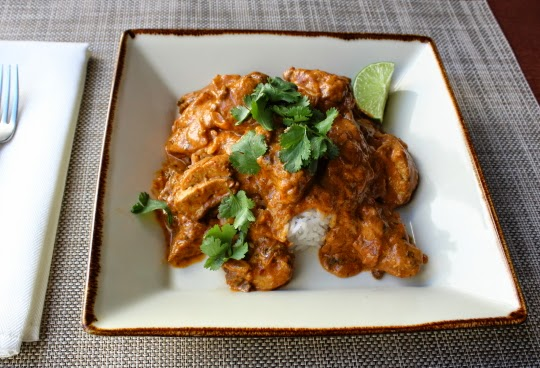

Chef John's Chicken Tikka Masala

Description
"Chicken tikka masala is usually made with heavy cream, but I like to use coconut milk instead; its subtle sweetness works beautifully with the spices in the dish. Serve with steamed rice.
- Chef John's beginner-friendly take on a classic British-Indian dish
Ingredients
For the Chicken
- 1 ½ pounds skinless, boneless chicken thighs
- 1 tablespoon vegetable oil
- 2 teaspoons kosher salt
- 2 teaspoons garam masala
- 2 teaspoons ground cumin
- 1 teaspoon ground coriander
- 1 teaspoon smoked paprika
- 1 teaspoon ground turmeric
- ½ teaspoon ground black pepper
- ¼ teaspoon cayenne pepper
- ⅛ teaspoon ground cardamom
- 2 tablespoons clarified butter (ghee), or more as needed
For the Tikka Masala Sauce
- 1 onion, chopped
- ¼ cup tomato paste
- 4 cloves garlic, finely grated
- 1 tablespoon finely grated ginger, or more to taste
- 1 cup crushed tomatoes
- 1 (13 ounce) can coconut milk
- ½ cup chicken broth, or as needed
- 2 tablespoons chopped fresh cilantro
- ½ teaspoon red pepper flakes
- salt and ground black pepper to taste